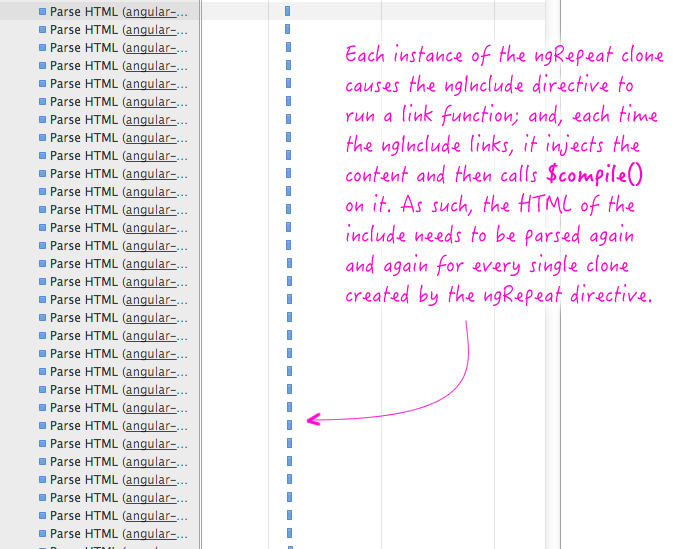

Angular JS
Performance
www.thatJSDude.com / @mdkhan005
(youtube.com/user/khanLearning)
ToDos
links
build an app
create input
starts
discuss how two way bindings and ng-repeat works
good: in depthMagic
two phases
- Compilation phase
- Runtime phase
Compilation Phase
<input ng-model="name">
- input with ng-model becomes angular directive
- setup a keydown listener to input
- Something in angular named: $interpolation
- interpolation: markup with expression => string
- interpolation setup a $watch
- $watch will be notified if "name changes"
$compile vs $interpolate vs $parse
Runtime Phase
- When you press 'X'
- Browser emits a keydown event on input
- input directive captures change
- calls $apply("name = 'X';") to update model
- Angular applies the name = 'X'; to the model
- The $digest loop begins
- $watch list detects change notifies $interpolation
- $interpolation updates the DOM by $parse
- angular finishes keydown event
- browser render new text
scope performance considerations
Scope
Scopes
- JavaScript Object
- Prototypical Inheritance
- Arranged in hierarchical structure
- Mimic the DOM structure of the application
- Stores an array of functions $$watchers
- Can watch expressions and propagate events.
- new scope creates more values for GC to collect later
understanding scope
scope life cycle
scope life cycle
- small scope will be faster than larger
- get some points
- will talk about this later
Very good: angularjs-performance-large-applications
ng-show
how it works
- show or hide html elment
- based on an expression
- by adding and removing .ng-hide class
- will create and evaluate hidden elements
- display none
start from here
ng-if
- completely removes and recreate DOM
- elements which is not in ur DOM, has less impact
- ng-if creates a child scope while ng-show/ng-hide does not
- ng-switch does the same thing
what should i use?
- How frequently will this change?
- the more frequent, the worse fit ng-if is
- How heavy is the scope?
- the heavyer, the better fit ng-if is
ng repeat
how ng-repat works
- Iterates over each item
- Runs via filters, if any
- Calculates a hash value to identify the object has already created a DOM
- If so, it reuses it
- If not, creates DOM based on ng-repeat template
- Insert into the actual DOM
- A watch is added on the array, which triggers step 1 again if the array undergoes any change
two ng repeat improvement suggestion
ng-include in ng-repeat
- Each time -
- clone ngInlcude directive to run a link function
- injects content
- calls $compile
- html in the ng-include needs to be parse again and again
ng repeat with nginclude
browser will spend time to parse html for each item
What can i do?
<li ng-repeat="item in filteredItems()">
<li ng-repeat="item in items">
what can i do?
- Pagination
- limitTo
<table>
<tr ng-repeat="d in data | limitTo:totalDisplayed">
<td>{{d}}</td>
</tr>
</table>
tuning long list
ng Infinite Scroll
- don't load everything use ng infinite scroll
filter in ng-repeat
Avoid using filters if at all possible. They are run twice per digest cycle, once when anything changes, and another time to collect further changes, and do not actually remove any part of the collection from memory, instead simply masking filtered items with css
This renders $index worthless as it no longer corresponds to the actual array index, but the sorted array index. It also prevents you from letting go of all of the list's scopes.
track by
<div ng-repeat=”item in array”>
I live and die by {{item}}.
<div>
<div ng-repeat=”item in array track by $index”>
I live until {{array.length}} is
less than {{$index}}.
<div>
ng-repeat performance by track by
bind once
git: bindoncesummary ng repeat
Digest cycle
Each time a Model is updated, either through user input in the View, or via service input to the Controller, Angular runs something called a $digest cycle.
This cycle is an internal execution loop that runs through your entire application’s bindings and checks if any values have changed. If values have changed, Angular will also update any values in the Model to return to a clear internal state.
When we create data-bindings with AngularJS, we’re creating more $$watchers and $scope Objects, which in turn will take longer to process on each $digest.
watcher
how angular updates
- remembers the value and compares it to previous value
- basic dirty-checking
- If there is a change in value, then it fires the change event.
- not everything in scope gets watch
Implicit watcher
- {{myExpression}}
- ng-repeat
- ng-show, ng-hide
- ng-if, ng-switch
A function gets added to the $$watchers array
explicit watcher
$watch(watchExpression, listener, [objectEquality]);
Talk much about $watch
When any value in scope changes, all watchers in the $$watchers array will fire, and if any of them modify a watched value, they will all fire again. This will continue until a full pass of the $$watchers array makes no changes, or AngularJS throws an exception.
if non-Angular code is run through $scope.$apply(), this will immediately kickstart the digest cycle.
The final note is that $scope.evalAsync() will run code in an async loop that does NOT trigger another digest cycle, and which will run at the end of the current/next digest cycle.

watch performance consideration
count watcher
use this explanation style
nice explanationdo as little as possible
- Avoid binding function directly to ng-show, ng-repeat, etc.
- Avoid watch a function result directly
- This function will run on every digest cycle
- will slow your application
Misko answer
had a code block to count number of watch
count number of watchaggregate watcher
All that time spent invoking change watchers was mostly wasted.
To address this, we created a directive that “hides” the change watchers of its children, allowing them to be invoked only when the value of a specified parent expression changes. With this change, we avoided invoking thousands of per-word change watchers on every mouse click or other minor event.
- whatever is the first argument will be executed, many many times
- it will compare values by reference
- but if you pass "true" in the
- deep - recurse through object with deep comparision; slow recurses-
- also make a deep copy each time watched, to compare
avoid deep watch each time possible
watchCollection
google it
remove unneeded watcher
check this onewatch only what needed
$scope.$watch(‘listOfBigObjects’,
myHandler, true);
$scope.$watch(function($scope) {
return $scope.listOfBigObjects.
map(function(bigObject) {
return bigObject.foo.
fieldICareAbout;
});
}, myHandler, true);
binding
one time binding
one time binding$apply() vs $digest()
- $apply does rootscope.digest
- this means everything: that scope and all its descendent are dirty checked
- when u r writing a directive and inside that u r doing something. then u should use digest than apply
directive
- when directive inside ng repeat
- 1. compile is called only once
- link and constructor is called once per iteration
so put as much as possible inside compile
myApp.directive(function() {
return {
link: function(s, elem, attr) {
s.foo = scope.$eval(attr.foo);
scope.$watch(attr.list,
function(list) {
// do something
}, true);
}};});
myApp.directive(function($parse) {
return {
compile: function(elem, attr) {
var fooExp = $parse(attr.foo),
listExp = $parse(attr.list);
return function link(s, elem) {
s.foo = fooExp(s);
scope.$watchCollection(listExp,
function(list) {
// do something
});
};}};});
transclusion and scope
see whether to include or notwhy slow
what makes angular slow
in efficient directive
- link vs compile
dirty checking
- lots of watcher
- lots of slow watcher
- too many calls to apply
filter
extra
nice collection
talk about emit, broadcast and bootstrapuse scope.$digest for performance
scope.digest as perf impcomparing
ng-perf.combatching http request
batching http requestmouseEnter
check middle for mouse enterngReact
check examplesummary
have a summary at bottommight get points for summary
a list with repetitive stuff
How to check perfomance
(if no wifi)
Free tip
Look Busy at Work
- Ctrl + 1 when big brother is around
- Always carry extra bag and print out
- do ur personal work, but leave after ur manager
- always leave a extra jacket on your chair
- compose email during office hours, send it midnight or weekends
Look busy
One thing
snippets are awesome
goo.gl/mfKvWP


www.thatJSdude.com / @mdkhan005
(youtube.com/user/khanLearning)